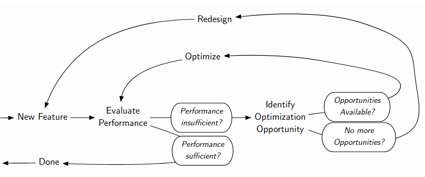
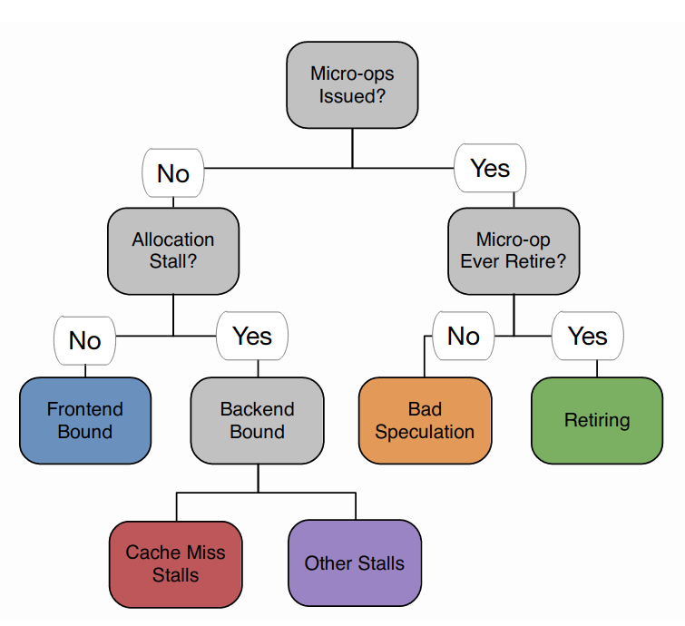
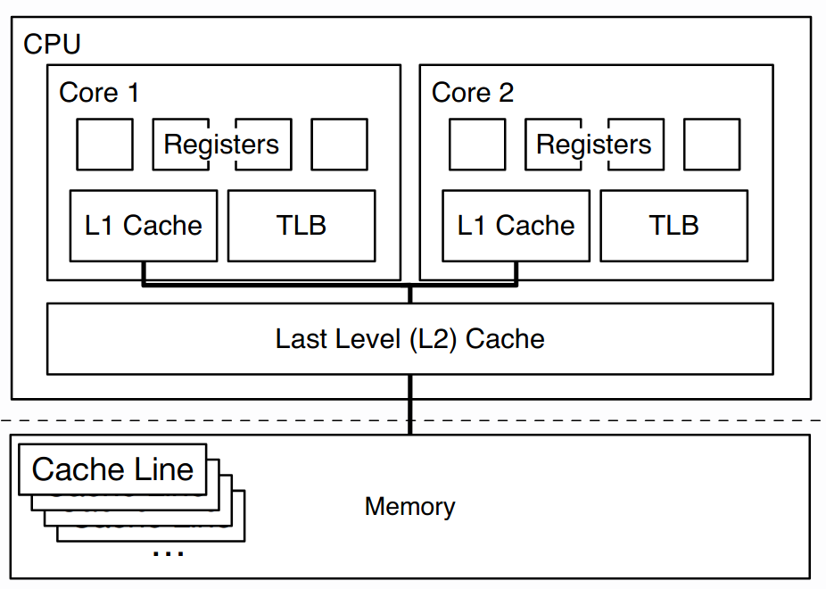
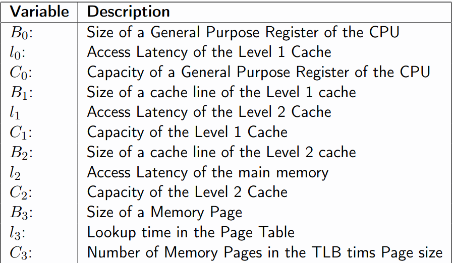
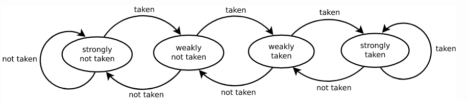
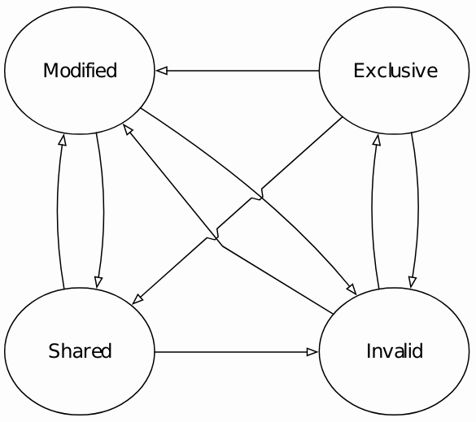

Lecture 1: Introduction
Systems are made up from components that interact to achieve a greater goal. They are usually applicable to different problems and domains, rather than HPC, which focuses on a single problem of high value.
Flexibility is key in a system: the exact conditions under which a system operates are unknown at development time.
For example:
- A Data management system does not know the data format/schema beforehand
- Grep does not know what regex to search for
In addition, software systems need to be maintainable because of how complex they are due to many years of development.
Finally, systems should be fast: a faster system is generally better than a slower system.
The challenge is to build a system which is balanced enough where it is maintainable, flexible and fast.
Live coding session
Write a program that counts the lines of a text file containing the phrase FAUST:.
1 - We first build a functional version:
// Interface
class Operator {
public:
virtual char const* getNextString() = 0;
};
// Read an array one time
class ArrayReader : public Operator {
private:
char const* inputArray;
bool isRead{false};
public:
ArrayReader(char const* array) : inputArray(array) {}
char const* getNextString() override {
if (isRead) {
return nullptr;
}
isRead = true;
return inputArray;
}
};
class LineSeparator : public Operator {
private:
Operator&& input;
char const* currentString{nullptr};
public:
LineSeparator(Operator&& input) : input(std::move(input)) {}
char const* getNextString() override {
if (currentString == nullptr) {
currentString = input.getNextString();
}
auto result = currentString;
// Advance until the next string for later calls
if (currentString != nullptr) {
while (*currentString != '\n' && *currentString != '\0') {
currentString++;
}
if (*currentString == '\n') {
currentString++;
} else if (*currentString == '\0') {
return nullptr;
}
}
return result;
}
};
class LineMatcher : public Operator {
private:
Operator&& input;
char const* currentString{nullptr};
public:
LineMatcher(Operator&& input) : input(std::move(input)) {}
char const* getNextString() override {
auto candidate = input.getNextString();
while (candidate != nullptr) {
// try to match with our target string
if (candidate[0] == ' ' &&
candidate[1] == 'F' &&
...) {
return candidate;
}
candidate = input.getNextString();
}
return nullptr;
}
};
class LineCounter {
private:
Operator&& input;
public:
LineCounter(Operator&& input) : input(std::move(input)) {}
unsigned long getCount() {
unsigned long count = 0;
auto line = input.getNextString();
while (line != nullptr) {
count++;
line = input.getNextString();
}
return result;
}
};
int main(int argc, char *argv[]) {
auto fd = open(argv[1], O_RDONLY);
auto fsize = lseek(fd, 0, SEEK_END);
lseek(fd, 0, SEEK_SET);
auto data = (char*) mmap(nullptr, fsize, PROT_READ, MAP_SHARED, fd, 0);
auto res = LineCounter(
LineMatcher(
LineSeparator(
ArrayReader(data)
)
)
).getCount();
printf("Count: %lu\n", res);
return 0;
}
2 - If we benchmark our program using time and compare with grep, we see that our program is x4 slower (for large file sizes). Now, we try to run the string matching on the main function directly by comparing the bytes, instead of using all of the classes and OOP-style code.
3 - We should also try to compile with -O3 optimisations, which gives us a good performance boost.
4 - We can improve the string matching loop by directly comparing an 8-byte word at a time:
// Get the bit pattern of what we're looking for
long word = *((long *) " FAUST:");
for (auto i = 0; i < fsize - 9; i++) {
long currWord = *((long*)(data + i);
if (currWord == word && data[i+8] == '\n') {
count++;
}
}
This gives us a x2 speed increase compared to grep. This is what performance engineering is about: we first meet the functional requirements and then optimise for performance.
Performance engineering is about the techniques applied during a systems development life cycle to ensure the non-functional requirements for performance will be met.
When to stop optimising?
How do we know when to stop optimising? How fast is fast enough?
-
Define a target metric, for example:
- throughput (ops/s)
- latency (s)
- memory usage
- scalability
- etc.
-
Decide when the requirements are met, two options:
- Set an optimisation budget (in terms of developer time and/or salary)
- Set an optimisation target/requirement (QoS), such as real-time requirements:
- Soft real-time-req: if missed, the software is an error
- Hard real-time-req: if missed, the software is a failure
The latter type of requirement is known as a Quality-of-Service (QoS) objective, which is a statistical properties of a metric that shall hold for the system. For example:
"The framerate of the game will, on average, be higher than 60 frames per second if run on a GPU with 50 GFlops or more."
QoS requirements can sometime conflict with functional requirements, so it is important to find the right balance.
A Service-Level Agreement (SLA) is a formal, legal contract specifying QoS objectives as well as penalties for violations of such objectives. For example:
"Trading orders shall not exceed 1ms response time. In case of violation, the user is eligible for a 10% credit towards fees."
When defining SLAs and QoS objectives, you should be SMART:
- Specific: state exactly what is acceptable in numeric terms
- Measurable: make sure what is stated can actually be measured
- Acceptable: rigorous enough to guarantee success in reality
- Realizable: lenient enough to allow implementation
- Thorough: ensure that all necessary aspect of the system are specified
Measuring and performance evaluation
In this course, we will focus on measurability but there are different techniques:
- Measuring:
- Monitoring
- Benchmarking
- Analytical Modeling
- Simulation
- Hybrid techniques:
- Model, then simulate, then measure
- etc.
Measuring is performed on the actual system, whether it is on a prototype or the final system. Measuring is often based on instrumentation and can achieve good accuracy, but it is often costly and can be difficult.
Monitoring
Monitoring refers to measuring in production. Monitoring is actually required to enforce SLAs in order to:
- Observe system performance,
- Collect statistics,
- Analyze data,
- Report SLA violations
Monitoring can incur cost, as you may need to setup monitoring systems and can directly affect the performance of the workload. Hence, monitoring is often not continuous.
Benchmarking
Benchmarking refers to "measuring in the lab". It is a two-step process:
- Get the system into a predefined (or steady) state.
- Perform a series of operations (the workload) while measuring relevant performance metric.
For example, database workloads usually have a data generator to make the system load a dataset (i.e., predefined state) and a query set (the series of operations).
The benchmark workload should be representative of production workloads but smaller for easier benchmarking. They can be:
-
Batch workload: the program has access to the entire batch from the start, useful when the metric is throughput. Here, the work generator is unimportant.
-
Interactive workload: work is generated randomly one at-a-time, useful when the metric is latency. The work generator should be as least as fast as the system, otherwise the system becomes under-utilised during the benchmark.
Interpreting results
A single measured datapoint is meaningless, due to the large amount of noise in modern computer systems. This is basic statistics: we need to aggregate multiple runs of the benchmark and report a measure of variance.
Optimisation loop
A key part of this lifecycle is to identify optimisation opportunities.
A parameter is a system and workload characteristics that affect performance. This is purposely a broad definition, so we can categorise parameters into two types:
-
System Parameters: those that generally do not change while the system runs (caches, CPU instruction costs, ...)
-
Workload Parameters: those that may change, even while the system is running (users, available memory, other processes...)
We can also divide parameters based on the representation: numerical parameters (such as CPU frequency) or nominal/categorical parameters (such as the target device class).
Utilisation is the percentage of a resource that is used to perform the service. Any service will have a certain amount of resources available (eg CPU cycles, memory capacity, network bandwidth). As such, the utilisation is a numeric parameter.
Bottlenecks
Given this definition, a bottleneck is the resource with the highest utilisation. We use the term x-bound to indicate that x is the bottleneck of an application:
- CPU-bound -> faster CPU needed
- Disk/network bandwidth-bound -> more disk/network bandwidth needed
- etc.
Unfortunately, identifying bottlenecks for an entire complex software system is practically infeasible. Instead, we should look at the performance-dominating code paths and dedicate our effort to optimising such paths.
Some paths have special names:
-
Critical path: the sequential part of the code in a parallel system, ie: the longest piece of sequential code needed to perform a particular service.
-
Hot path: the path that takes the most time.
How to optimise?
The goal in optimisation is to:
-
Compare alternative designs (development)
-
Select a close-to-optimal value for a platform parameter (tuning)
The second strategy is known as parameter tuning, which is finding the vector in the parameter space that either:
- minimises resource consumption, or
- maximises a performance metric
This implies exploring the parameter space and can be quite expensive. We can build analytical models to accelerate this tuning process.
Analytical performance models
An analytical performance model is a formal characterisation of the relationship between system parameters (hardware, software, data) and performance metrics.
The challenge is to model a dynamic system using a (reasonably small) static model.
Models can be stateless (eg., characterising equations, such as regression curves) or stateful (eg., markov chains), which are usually harder to implement but more accuarate.
Analytical models:
- are fast
- they allow what-if-analysis (to estimate the change of a system/workload parameter)
Models are key to defining the achievable performance requirements in an SLA.
Examples of analytical performance models are:
Example 1: An I/O bound application, that needs to read 40MB per request is limited to 10 requests per second when running on a hardware platform with a single disk providing 400MB/s bandwidth.
Example 2: A compute-bound application that needs 3 cycles to process one byte is limited to 20 requests per second if it needs to process 40MB per request and the CPU runs at 2.4GHz.
Simulation
A simulation is a single observed run of a stateful model.
They can be extremely expensive to calculate especially if the level of detail is high.
Lecture 2: Profiling and Performance Tracing
This lecture goes into more detail about identifying optimisation opportunities, specifically, we identify:
- the hot path (the code that takes the most time)
- the bottleneck within the hot path
Both of these are functions of system behaviour, described by events.
Events
Events are any change of the system state. Usually, we restrict events to a certain granularity, for example:
- Simple/atomic events (executed an instruction, loaded an address, clock tick, etc.)
- Complex events (cache line evicted from L1 to L2 cache, instruction aborted due to misspeculation, etc.)
An event may have an optional payload (which is metadata describing the event in more detail) and an accuracy: the event accuracy is the degree to which its value represents reality.
Events originate from an event source, which generally has two components:
-
the generator, which generates a new occurrance of an event. This is usually online (during runtime or part of the system). For example, the code in the kernel that sends network packets can be considered a generator of network events.
-
the consumer, which processes the events. It can be offline (the events are not used for any meaningful purpose) or online (the events are used in some way, such as calculating statistics of the events).
These events can be used for tracing or profiling.
Tracing
A trace is a complete log of every state the system has ever been in during a given period of time. Thus, a trace is comprised by a sequence of ordered events.
The accuracy of a trace is inherited from the events. Importantly, event collection may have a high overhead during tracing, which can lead to problems.
Example: Call stack tracing
Call stack tracing consists of sampling snapshots of the call stack of the application at regular intervals. Every time a function calls another function, a new frame is added to the stack. Therefore, we can trace how long our program spends in each function call.
A call stack consists of different function frames, each of which contain the required and relevant state to execute the function: variables, the return address and the saved frame pointer (if not optimised away during compilation). Each frame's saved EBP (frame pointer) points to the function it was called from. Hence, we can walk through the stack by following the frame pointers.
However, walking the stack can be expensive if the call stack is very deep (as the complexity is linear in terms of the number of function calls). In particular, for small functions, call stack processing can be more expensive than the function itself (because we need to save the EBP).
Perturbation and sampling
This issue is known as perturbation: the degree to which the performance of a system changes when it is being analysed. Although the overhead is unimportant (because we are not going to trace the program during production), perturbation can negatively affect accuracy if it is non-deterministic (ie: you don't know how much overhead you are adding).
We can reduce perturbation by reducing fidelity (the degree of exactness). In our context, this means:
- Perfect fidelity means every event is recorded
- Reduced fidelity means not every event is recorded
In practice, reducing fidelity works via sampling, where we collect events in regular intervals.
An interval is the distance between two samples being taken. We can specify interval lengths via:
-
Time-based intervals: set a hardware recurrent timer and sample whenever it runs out. The notion of time is usually captured via CPU reference cycles (because time in a CPU is not accurate, as clock rates may vary across different cores). These intervals are easy to interpret, as we are measuring time and this is inversely proportional to performance.
-
Event-based intervals: defined in terms of the occurrence of events (e.g.: sample every fifth function call). This gives us accurate results with low noise (using hardware counters), however it can be tricky to interpret (as we are usually interested in time).
Interval resolution is limited to (usually) discrete clock cycles, however time is continuous. This introduces a quantisation error when attributing an event to a particular clock cycle. For example, if we have an expensive SIMD instruction just before a simple MOV instruction, a profiler may tell us that the MOV instruction is being slow when in reality its the previous instruction which is slow (this is quantisation error).
Returning to the example of call stack sampling, we simply skip some events. This means some functions may be skipped but there is a good chance that expensive functions will be sampled more often. This gives us good performance and reduced perturbation.
Indirect tracing
An example of event-based interval sampling is indirect tracing. The idea is that events dominate each other, so we should only trace the dominant events.
We can think of it as intervals defined by the execution flow: if we have an if statement, then all the code in the branch that is taken will be deterministically executed. Therefore, we do not need to trace every instruction in the branch, we can just record the fact that the branch was taken in the first place. Hence, we say that control-flow instructions dominate non-control-flow instructions. We can count how many times a branch is executed (known as basic block counting).
Indirect tracing can be used to reduce overhead/perturbation (because we don't have to sample every instruction), however the fidelity/accuracy depends on the event and how much indirection there is.
Profiling
Profiling (in the context of performance engineering) is a characterisation of a system in terms of the resources it spends in the certain states. Since an event is a transition of states, we can derive a profile from events.
Specifically, a profile is an aggregate over the events of a specific metric. This is can be a global aggregate (eg: total cache misses, total CPU cycles) or an event-based aggregate (eg: cycles per instruction, cache misses by line of code).
Profiling is useful for:
- post-mortem analysis for ease of interpretation
- reducing perturbation by aggregating traces into profiles in real-time (assuming aggregation is faster than writing the traces to memory)
As mentioned earlier, events originate from event sources. These should be detailed, accurate and have little perturbation. Events can originate from:
- Software:
- Library: manual instrumentation, logging
- Compiler: automatic instrumentation
- OS: kernel counters
- Hardware:
- Performance counters
- Emulator: a hybrid of both, with minimal perturbation (but not scalable)
Instrumentation
Consists of augmenting the program with event logging code. There is no need for hardware support and extremely flexible. However, there is high overhead and high perturbation.
There are three approaches to instrumentation:
-
Manual instrumentation: basically using logging using
printf(or a logging library).- Advantages: fine-grained control, no hardware involvment
- Disadvantages: high runtime and implementation overhead
-
Automatic source-level instrumentation: source-to-source rewriting, usually compiler-supported.
- Advantages: todo, see interactive lecture
- Disadvantages: less control, compiler support required
-
Automatic binary instrumentation:
- Static (compile-time): simple, portable, instrumentation overhead is easily assessed from the binary
- Dynamic (runtime): no recompilation, works on a running process and with JIT-compiled code
An example of automatic instrumentation is the LLVM XRay framework, which can be used to automatically log every function call and exit. One limitation of this framework is that it only retains function calls that take more than 5 microseconds. For higher fidelity and lower overhead, we can look at performance counters.
Performance counters
An alternative to instrumentation for profiling is analysing performance counters.
Although software counters exist in OS kernels (packets sent/received, virtual memory operations, etc.), they are not often used. Instead, we prefer hardware performance counters.
Hardware performance counters are special registers that can be configured to count low-level events. Only a fixed number can be active during the profiling process and can be used to collect events and/or intervals.
Unfortunately, these are often buggy, poorly documented and may be inaccurate. However, the common performance counters are usually fine.
In Linux, we can use the perf tool to access different hardware performance counters. Many of these are often associated to cache behaviour, such as cache line evictions or cache misses.
Case Study: Microarchitectural bottleneck analysis
One of the most important types of analyses you can carry out to increase performance of software is by analysing behaviour and identifying bottlenecks at the microarchitectural level.
1. CPU pipelining and frontend stalls
First, we should understand how CPU pipelining works. A CPU maintains a pipeline of instructions which are at different stages: fetch, decode, execute, memory and write-back. The ideal situation is that the pipeline is filled, so as many instructions are being processed at a time (instruction-level parallelism). At every cycle, an instruction is retired (removed) from the pipeline.
Unfortunately, having a full pipeline isn't always possible due to control hazards, ie: jump instructions, because we need to change the instruction pointer. We cannot know where to jump to until the JMP instruction reaches the last slot of the 5-stage pipeline, meaning we only retire 1 instruction from 5 cycles (80% less than the ideal case). This scenario is known as a frontend stall, because the front of the pipeline doesn't know what instruction to read yet.
Branch prediction is a technique where the CPU speculates upon which branch may be taken and starts loading and executing instructions from within that branch immediately, rather than stalling the pipelining.
When the comparison/branch instructions are finally retired, the CPU figures out if we have correctly predicted the branch. If it mispredicts the branch, the CPU has to flush/clear the pipeline and restart from the branch instruction, which negatively affects performance. Such discarded instructions are referred to abandoned instructions.
2. Resource stalls
An ALU stall refers to when an expensive arithmetic instruction takes several clock cycles in the execution/memory stage and blocks the stream of instructions through the pipeline. For example, division is often an ALU stall because it may take several cycles to execute.
3. Memory subsystem and data stalls
Depending on what memory we access (L1 cache, L2 cache, LL cache or main memory), we will get different latencies.
The graph below shows that if we access values in nearby memory locations, the cost (in CPU cycles) is much lower. The greater the access stride, the more costly it is to read memory. This is due to how caches work and the size of cache lines (every 64 bytes corresponds to a different cache line).

The next graphs shows memory access latency (in cycles) depending on the size of the data. For a 4kB array, all our memory access will be hitting the L1 cache. Between 32kB and ~4MB, we access the last-level (L3) cache.

The key takeaway here is that CPUs can also stall on memory accesses.
Bottleneck analysis
Given the different types of stalls, we can identify different microarchitectural bottlenecks in order through which they may arise in the pipeline:
- Memory access stalls (which fetching the operands for an instruction)
- Resource allocation stalls (ALU stalls)
- Branch mispredictions (leading to abandonded instructions due to flushing)
- Control-flow dependencies
We can use the following decision tree to determine what the bottleneck is. Our starting node asks if a micro-operation has been issued (ie: has something happened?, has our pipeline advanced?).
If nothing has happened and there is no resource allocation stall (such as an ALU stall), then this is a frontend-bound issue, ie: no instructions entered the pipeline, likely due to a control-flow dependency (too many function calls or jumps in memory).
Otherwise, the bottleneck is backend-bound: cache miss stalls or resource stalls.
If there was a micro-op issued and some progress was made in the pipeline, then the instruction can either retire (good case) or abandoned due to bad speculation (likely due to too many branching code).
Tutorial notes
Possible exam questions: given an algorithm/data structure, what would the profile look like for it?
Ie: profile of a rebalancing operation in a Red-Black Tree (considering the size, depth, etc.)
-
A lot of code/instructions (long algorithm, a lot of recursion) -> likely to be frontend bound
-
Random memory accesses -> memory-bound
-
Code is highly OOP with a nice API (many function calls) -> frontend bound
Lecture 3: Performance Modeling
This lecture is about coming up with analytical models for measuring performance. The primary reason for modeling is when we want to learn about a system's performance "on the cheap", ie: without running the software.
This is useful for when we may need to predict how much we may be charged for the execution of software (cloud services), to know how many resources we need to provision a system, etc.
Assumptions:
-
The input data follows a known distribution (usually uniform without correlation).
-
We ignore system noise (caused by scheduling, external factors, etc.).
-
We will model single-threaded deterministic code.
Under these assumptions, there are two approaches to modeling:
-
Numerical/Experimental Model: we run the system, acquire a series of datapoints and come up with a predictive model.
-
Analytical Model: a formal characterisation of relationship between parameters and performance metrics, often expressed as an equation.
Numerical Models
The first step is to gather data. We do this through microbenchmarks, a small specially designed program used to test to performance behaviour of that small portion of the system.
Throughout the lecture we will consider the following microbenchmark which tests the memory subsystem access performance:
extern int* input;
extern size_t N; // some large constant
extern size_t stride; // the parameter of our experiment
int sum = 0;
for (size_t i = 0; i < N; i += stride) {
sum += input[stride];
}
The next step is to interpret the results of the microbenchmark. A common interpretation technique is interpolation, where we draw a graph based on the datapoints we collected. It is not usually very accurate, but it is easy for humans to understand.
Advantages:
- Easy to get (if the system is available to run)
- Based on ground truth (this is actual measured behaviour)
- Easy to interpret
Disadvantages:
- They generalise poorly (cannot easily be applied to new environments, such as more CPUs, more memory, etc.)
- Massive amounts of experimental data needed for high-dimensinal parameter spaces
- Limited accuracy and prediction confidence
- Limited interpretability (contributing factors are implicit)
Analytical Models
Analytical modeling requires detailed understanding of the system (the parameters and their effects) and extensive validation.
Model fitting helps you convert empirical/numerical models into analytical models. One way to do this is through regression, which gives you an analytical linear equation describing the data.
Note that the boundary is blurry: interpolation is numerical while regression is analytical can be argued. The key difference is that analytical models are more expressive.
To obtain an analytical model, we need two components:
-
Characteristic equation: an equation that describes the behaviour of the target metric of your experiment in dependence of a varied parameter (eg:
stride). -
Values for system parameters (eg: access latency, cache capacity...)
Example 1: Building an analytical model for memory access by stride
First, we need to understand the system we are trying to model. Below is a diagram of the memory subsystem:
As such, we need to define our system parameters. For each level in the hierarchy, we have: a block size, the access latency and the capacity.
Now, we can develop a characteristic equation for the access stride experiment:
Let \( T_{mem} \) be the average time for a memory access and let \(s\) be the stride size in bytes.
\(T_{mem} = l_0 \cdot min(1, \frac{s}{B_0}) + l_1 \cdot min(1, \frac{s}{B_1}) + l_2 \cdot min(1, \frac{s}{B_2}) + l_3 \cdot min(1, \frac{s}{B_3})\)
Here, each term represents the latency to access layer \(n\) multiplied by the probability of missing layer \(n\) and going to the next layer. Naturally, the larger \(B_n\) is, there is a lower chance for missing at layer \(n\).
Example 2: Building an analytical model for random memory access
Let's model this benchmark, where we have random access into the array input2:
extern int* input1; // uniform random data
extern int* input2; // random data
int sum = 0;
for (size_t i = 0; i < inputSize; i++) {
sum += input2[input1[i]];
}
First, let us define parameters in terms of memory regions and access patterns (see section 3 of this paper).
- The length of a memory region is \((R.n)\) (ie: the number of stored "elements")
- The width of a memory region is \((R.w)\) (ie: the size of the tuple/struct in words)
- The total size of the region \(||R||\) (ie: \(n \cdot w\))
- The access pattern is \(u\) (ie: the distance between two accesses)
In addition, we can model two types of access patterns:
- \(\text{Pattern 1} \oplus \text{Pattern 2}\) is the sequential execution of both access patterns.
- \(\text{Pattern 1} \odot \text{Pattern 2}\) is the interleaved execution of both access patterns (ie: doing two access in each iteration of a loop)
If we suppose that input1 contains 1024 uniform random ints and input2 has 64 random ints, we can describe the access pattern in terms of an interleaved sequential traversal (into input1) and random access (into input2):
\(s_{trav}(R.n = 1024, R.w = 1, u = 1) \odot rr_{acc}(R.n = 64, R.w = 1, u = 1, r = 1024)\)
Here \(r\) represents the number of accesses. We have \(R.w = 1\) because we are storing integers (we assume integers are a word in size) and \(u = 1\) because our stride is 1 word.
\(s_{trav}\) represents the sequential traversal while \(rr_{acc}\) represents the repetitive random access.
We can do more interesting things, where input1 is struct:
struct record {int a; int b; int c;};
extern record* input1; // uniform random data, 1024 values
extern int* input2; // random data, 64 values
int sum = 0;
for (size_t i = 0; i < inputSize; i++) {
sum += input2[input1[i].a];
}
The access pattern description is:
\(s_{trav}(R.n = 1024, R.w = 3, u = 1) \odot rr_{acc}( R.n = 64, R.w = 1, u = 1, r = 1024)\)
From the paper, we support three different access patterns:
- Sequential traversal \(s_{trav}\): a sequential sweep over all the values in R exactly once.
- Single random traversal \(r_{trav}\): all elements are accessed exactly once but in a random order.
- Repetitive random access \(rr_{acc}\): randomly accesses \(r\) values (may be hit more than once and some may not even be hit).
Modeling stateful/dynamic systems
Some components can have a dynamic state, where each state can influence behaviour and performance. The analytical models we have seen so far are stateless.
We can use stochastical methods to model stateful systems. We will focus on Discrete Markov Chains.
A discrete Markov chain is basically a finite-state machine with transition probabilities. They have a property whereby the next state is only dependent on the previous state and a random variable.
Example: Modeling branch misprediction
Consider the following microbenchmark:
extern int* input; // uniform random ints between 0 and 100
int sum = 0;
for (size_t i = 0; i < inputSize; i++) {
if (input[i] > threshold) {
sum += input[i];
}
}
One of the factors contributing to the performance of this code is the branch misprediction rate. If threshold is set to 50, the branch predictor will be wrong more often than if it was set to <20 or >80 for example (because the data is random).
We can model branch misprediction rate using a Markov chain:
The branch predictor starts in any of the shown states, which represents the confidence of the branch predictor based on whether the branch is actually taken or not.
We can calculate the probability of it being in any state as the stationary distribution.
The branch misprediction rate is then given by:
\(( P(pred_taken) \cdot P(act_not_taken) ) + ( P(pred_not_taken) \cdot P(act_taken) )\)
As you can see from the expression above, the worst case scenario is when we are in a not taken state but the branch is actually taken, or when we are in a taken state but the branch is not actually taken.
We can model branch predictors with more states if we want to keep a deeper history of past branches and potentially get more accurate branch predictions.
Modeling can be useful because you can verify results that have been stated and you take for granted.
Tutorial exercise notes
Attach to process, run the query a few times and then select the section where there is high activity.
We get that densescan_int is the hotspot function (line 680 scan_sel(densescan, _dense) which is a macro).
We can expand the macro by running the command in section 3.3 (fetches the source file gdk_select.c, puts it through a preprocessor and expands all macros).
Running VTune now with the macro unfolded, we see the actual code which is a for loop and the difference parameters that affect performance.
The behaviour is that we have a large array and we apply some predicate to it. If the predicate holds for the value, we record the index to some output data structure.
We can now write a microbenchmark:
long long inputSize = 128 * 1024 * 1024;
static void selection(benchmark::State& state) {
auto value = state.range(0);
auto input = new int[inputSize];
std::default_random_engine generator;
std::uniform_int_distribution<int> distribution(1, 501);
auto getValue = std::bind(distribution, generator);
for (size_t i = 0; i < inputSize; i++)
input[i] = getValue();
auto output = new int[inputSize];
size_t j = 0;
for (auto _ : state) {
for (size_t i = 0; i < inputSize; i++) {
if (input[i] < value) { // check predicate with input argument
output[j++] = i; // write the index if true
}
}
benchmark::DoNotOptimize(ouput); // important!
}
benchmark::DoNotOptimize(input);
delete[] input;
}
BENCHMARK(selection)
->Arg(0*50)
->Arg(1*50)
->Arg(2*50)
...
->Arg(10*50)
This code snippet suffers from branch misprediction (the inverse parabola curve), where the performance is good during the start, worsens around the middle and then improves again towards the end.
Lecture 4: Writing Efficient Code
Now that we know what a bottleneck is, how to identify one and model it, our challenge is build a system without a bottleneck, ie: one where all resources are equally utilised. This is known as a balanced system.
Unfortunately, there is no such thing as a balanced system (only balanced sections of code). Different hardware optimisations have varying impact on code and therefore we say that balance is a function of code.
The fundamental tradeoff is between CPU and memory bandwidth efficiency and hence we distinguish between resource-bound code:
- Compute-bound
- Memory-bound:
- Latency-bound
- Bandwidth-bound
We can influence these bottlenecks with different techniques, such as high-level techniques (choice of algorithm, memoisation, compression, etc.) and low-level techniques (our focus).
Compute-bound code
Our primary objective is CPU efficiency. Generally, CPU-bound applications are those that:
- are poorly implemented
- operate on small (cache-resident) datasets (ie: our bottleneck is not memory)
- are math-heavy (esp. floating point math)
- apply memory-oriented optimisations (ie: we have solved memory bottlenecks)
Our target metric is wall clock time. Because wall clock time can be difficult to measure precisely, we often use certain proxy metrics such as stall cycles (caused by hazards) or CPI (cycles per instruction).
Hazards cause stalls in the CPU pipeline and there are different types:
- Control hazards: stalls due to data-dependent changes in the control flow (jumps and branches).
- Data hazards: stalls due to operands (data) not being available on time.
- Structural hazards: stalls due to a lack of physical execution resources (registers, execution ports/units, ...).
We have already discussed hazards before (lecture 2) and they map nicely to the diagram below:

The ALU stall corresponds to a structural hazard, control hazards occur when no eligible instructions are ready (due to jumps) and abandonded instructions (due to misspeculation). Data stalls are caused by cache misses. Obviously, retired instructions are not hazardous.
Therefore, CPU optimisation is about mitigating these hazards and exploiting pipelined execution. Lets talk about some fundamental design decisions when it comes to pipelining.
Speculative execution
Its purpose is to keep the pipeline full even if no instructions are eligible by executing instructions speculatively. This aims to address control hazards (branching). The other type of speculation is memory prefetching (covered in the memory-bound section below).
Superscalar execution (dynamic parallelism)
The idea is to have multiple CPU pipelines within the same core. This means that different instructions can be in the same stage (eg: we can have two MUL instructions in the execution stage).
Modern CPUs tend to be four-way superscalar, ie: it has four different pipelines.

Out-of-order execution
As a consequence of superscalar execution, out-of-order execution exploits the independence of instructions.
After decoding the instruction, the CPU will know if it has dependencies on other instructions or data. If instructions have no unsatisfied dependencies, it will move onto the execution stage directly. Therefore, we may execute instructions in a different order in which they arrive.
Out-of-order execution aims to address data and structural hazards.
SIMD (static parallelism)
Another form of instruction-level parallelism is through SIMD instructions (Single Instruction Multiple Data). These instructions allow the CPU to perform the same operation on multiple data items at once, in a single cycle.
They use large specialised vector registers for different data types, allowing them to load multiple data items into a single register.
Improving efficiency with partial evaluation
An important consideration to improving CPU efficiency is to write runtime predictable code for the critical path. We should evaluate code as early as possible and outside of the critical path whenever possible.
One technique is partial evaluation which consists of making the compiler work for you. We treat programs as multi-phased process. In every phase, you know more about the result so you can come up new programs that is more specialised tailored to the input. Examples are:
- Function inlining: the compiler evaluates a function jump and places the code at the call site.
- JiT compilation: we start with higher level bytecode and compile it into native machine code.
- Symbolic programming: perform arithmetic on symbols rather than values (eg:
x/xwill always be 1). - Constant expression evaluation: evaluate constant expressions at compile-time.
Example 1: constant evaluation
int result(int input) {
return input*3*5;
};
int result2(int input) {
int three = 3-1;
int five = 4+1;
return input*three*five;
};
int three = 3;
int five = 5;
int result3(int input) {
return input*three*five;
};
In result2(), the compiler figures out that variables three and five are always constant and replaces the operation with the values.
In result3(), the C compiler does not perform constant evaluation because it sees that three and five are variables available to other parts of the code and may be modified. It is important to understand the language semantics to know what constitutes a constant.
Example 2: lifting expensive operations
Any work that is executed often (such as in a loop) can be moved/lifted into a section where it executed seldomly. This can reduce control-flow hazards, since they now only occur once per loop rather than per iteration. A typical example is loop invariant motion, where we move loop invariant operations outside of the loop:
for (size_t i = 0; i < N; i++) output[i] = 7*8;
becomes:
int tmp = 7*8;
for (size_t i = 0; i < N; i++) output[i] = tmp;
A related problem is loop specialisation. Suppose we want to scale a vector:
void scaleVector(int* input, size_t inputSize, int scale) {
for(size_t i = 0; i < inputSize; i++)
input[i] *= scale;
}
The issue is that multiplications are quite expensive. Therefore, we can specialise the loop to avoid operations entirely (if scale == 1) or make them cheaper (use bit shifts).
void scaleVector2(int* input, size_t inputSize) {
if(scale != 1) { // avoid scale == 1 entirely
if(scale == 2)
(size_t i = 0; i < inputSize; i++)
input[i] <<= 1; // use cheap bitshift for scale == 2
else
(size_t i = 0; i < inputSize; i++)
input[i] *= scale;
}
}
Unfortunately, this leads to code duplication. Instead, we can use metaprogramming to get the compiler to do the work for you. The idea here is to generate special cases at compile-time and apply optimisations for these cases.
C++ supports template metaprogramming and allows us to turn this...
void scaleVector(int* input, size_t inputSize, int scale) {
for(size_t i = 0; i < inputSize; i++)
input[i] *= scale;
};
int useIt(int* input, size_t size) {
scaleVector(input, size, 2);
scaleVector(input, size, 1);
scaleVector(input, size, 0);
}
into this...
template <int scale> void scaleVectorPE(int* input, size_t inputSize) {
for(size_t i = 0; i < inputSize; i++)
input[i] *= scale;
};
int useIt(int* input, size_t size) {
scaleVectorPE<2>(input, size);
scaleVectorPE<1>(input, size);
scaleVectorPE<0>(input, size);
}
Because the scale factor is known at compile-time, the compiler will be able to replace a multiplication by 2 with a bitshift, ignore the scale of 1 and set the input to 0 directly in the third case.
A useful pattern is to create a map that holds precomputed special cases for certain inputs. If the input is defined in the map, the precomputed result is obtained. Otherwise, we can resort to our runtime version of the function.
Example 3: branch-free code
We can go even further by writing branch-free code. We have seen how control-dependencies can cause hazards, such as below:
for(size_t i = 0; i < inputSize; i++)
if(input[i] < high)
output[outI++] = input[i];
We can be clever and manipulate how the ouputI index changes:
for(size_t i = 0; i < inputSize; i++)
output[outI] = input[i];
outI += (size_t) (input[i] < high);
We are now writing everything to the output array however we only move onto the next case if the condition holds. If it does not hold, outI does not change and the next value will overwrite the previous value (which is fine). In fact, this is beneficial for cache locality!
We can see the performance impact compared to the previous snippet (for a random array):
We've converted this control dependency into a data dependency, so we need to be careful. If we find that branch missprediction is causing a problem, if-conversion is a good idea. Otherwise, it's probably not worth it (a lot of code is already very predictable, the case above is randomised). The bottom-line is: measure, then optimise!
Example 4: SIMD vectorisation
Compilers try to automatically vectorise your code. For a simple case like below...
for (size_t i = 0; i < 1024; i++) out[i] = in1[i] * in2[i];
...the compiler will succeed. However, for more complicated cases we need to explicitly vectorise our code using intrinsics. Lets see an example below:
#include <immintrin.h>
union v8f { // either a float[8] or a SIMD word
float floats[8];
__m256 simdVec;
};
auto input1 = new int[bounds1]; // random data
auto input2 = new int[bounds2]; // random data
// Non-vectorised sum:
float sum = 0;
for (size_t i = 0; i < bounds1; i++)
sum += input2[input1[i]]
// Vectorised sum:
v8f sums{};
for (size_t i = 0; i < bounds1 / 8; i++) {
v8f values {
// load values from memory using gather
.simdVec = _mm256_i32gather_ps(input2, ((__m256i*)input1)[i], sizeof(int))
};
// perform addition directly on the simd register
sums.simdVec = _mm256_add_ps(values.simdVec, sums.simdVec);
}
float sum = 0;
for (size_t i = 0; i < 8; i++)
sum += values.floats[i];
In the vectorised version, we obtain a x5 performance improvement than the scalar version. It is crucial that we keep our data in SIMD registers, otherwise we don't get the same benefits.
Memory-bound code
Data hazards are caused by instructions that need to access data from memory but it results in a cache miss, producing a pipeline stall. If the value has been accessed at some point previously, then this is called a capacity miss. Otherwise, this it is a compulsory miss.
Whenever we stall due to data hazards, we call the code memory-bound. We can be even more precise and describe two different situations whenever a stall occurs (due to data hazards):
- Memory bandwidth bound: if the memory bus if fully utilised
- Memory latency bound: if the memory bus is not fully utilised
We can apply different strategies based on the problem:

Compulsory cache misses
Generally, the number of data-hazards (cache misses) when running a loop will be:
\(\frac{\text{data size}}{\text{cache line size}}\)
Luckily, CPUs support hardware prefetching whereby caches speculatively load the next cache line by recognising patterns and strides. This works well for regular memory accesses, but may break for irregular accesses like data-dependent accesses.
struct tuple { int x; int y; int z;};
int sumIt(tuple* input, long size, tuple* input2) {
int sum = 0;
for(size_t i = 0; i < size; i++)
sum += input2[input[i].x].y;
return sum;
}
In the example above, the CPU knows the next cache line to be accessed for indexing into input[i] because it is a simple strided-accesses, however the index into input2 is data-dependent. We can help the CPU through software prefetching via intrinsics:
struct tuple { int x; int y; int z;};
int sumIt(tuple* input, long size, tuple* input2) {
int sum = 0;
for(size_t i = 0; i < size; i++){
sum += input2[input[i].x].y;
__builtin_prefetch(&input2[input[i + 16].x]);
}
return sum;
}
We hint at the CPU that we are soon going to access the value within 16 iterations. Note that this happens asychronously at the hardware level.
Increasing cache-line utilisation
Cache-line utilisation is defined as \(\frac{\text{data requested}}{\text{data loaded into cache}}\).
We can increase utilisation by changing the data layout in memory. We can change the struct tuple from the previous example to hold three arrays: one for x, y and z. This means that all xs are next to each other (and ys and zs):
struct tuple { int* x; int* y; int* z;};
int sumIt(tuple input, long size, tuple input2) {
int sum = 0;
for(size_t i = 0; i < size; i++)
sum += input2.y[input.x[i]];
return sum;
}
This optimisation is called Array-of-Structs to Struct-of-Arrays.
Capacity cache misses
Capacity-bound code suffers from thrashing: the larger the data we are accessing, the higher cost we are paying (because it doesn't fit in the cache).
This often happens when we have nested loops where we access two different regions of memory. A common solution to this issue is loop tiling, where we repeatedly access a cache line to keep it hot, so cache lines for one of the memory regions are never trashed.
(See lecture video at 1h 31m for good example)
In conclusion, if your code is:
- Bandwidth-bound, then increase cache-line utilisation
- Latency-bound, then prefetch data
- Capacity-bound, then reduce the footprint/hot dataset
Multicore hazards: cache coherency
A final type of hazard to be aware about in a multicore environment is cache coherency. Whenever one core modifies a value in its cache, it needs to be updated in the other cores' caches.
Intel x86 CPUs have a QPI bus (Quick Path Interconnect) that connects caches directly to avoid having to go through the memory bus for cache coherency updates.
The cache coherency protocol used by most modern CPUs is MESI, which describes four different states in which a cache line can be in:
- Exclusive: a single core exclusively holds a cached copy of some data in its cache.
- Shared: when another core accesses the data, it creates a copy in its core and the cache line becomes shared.
- Modified: when one of the cores modifies the data, the state of the cache line in its core becomes modified.
- Invalid: the other cores' same cache lines become invalid.
Tutorial notes
Lecture 5: Multicore Systems and Parallelism
This lecture is about scaling up and adding parallelism to our program to improve performance.
Background
In 1974, an observation known as Dennard scaling says that as transistors shrink, they become faster, consume less power and are cheaper. However, due to physical and manufacturing limits, this observation ended in 2004.
On the other hand, Moore's Law is still true today (the number of transistors double every few years). To continue making good use of all these new transistors, we moved from single-core to multi-core in order to execute more instructions in parallel.
There are three forms of parallelism:
- Data-level parallelism, such as vectorised instructions (SIMD).
- Instruction-level parallelism, via superscalar and out-of-order execution.
- Task-level parallelism, via threads, processes, GPU kernels...
This lecture will focus on task-level parallelism: multithreading and multiprocessing.
Parallelism can be benefical for:
- Making an application faster (by breaking it down into parallel parts)
- Making a system more cost-efficient (by sharing system resources or using multiple machines)
Example: Simple CPU provisioning
Suppose a server with the following conditions:
- 1 Gbps network card
- 1 request is 1 KB long
- 1 request takes 50 s to process
Calculate the number of CPUs needed to serve this in a single machine.
Click to see the answer
The key to answering this question is to look at the dimensions/units of each quantity. The number of CPUs has no unit, so we need the units to cancel out:
Units: bits/sec * sec * 1/bits
Calculation: (1e9) * (50e-6) * (1/8000) = 6.25 -> 7 CPUs needed
Multithreading
Threads are concurrent streams of execution and share memory within a process. We will explore threads in more detail next.
Performance analysis
When analysing the performance of a multithreaded application, it is important to understand the critical path (the sequence of tasks determining the minimum time needed for an operation) and any potential dependencies on non-parallel sections of the code.
It is important to optimise non-parellel sections of code instead of parallel code, as it will take up the most time in the critical path.
For example, if we have a program with the following runtime, clearly it is more important to optimise c() because it is the bottleneck of the system:

Communication and synchronisation
We will describe four types of communication and synchronisation:
-
Explicit sharing: all threads share process memory and the hardware handles memory updates through cache coherency protocols. We need to ensure we do not have data races through atomic operations, mutexes/critical sections, condition variables and other primitives. See Theory and Practice of Concurrency notes for more details on synchronisation primitives.
-
False sharing: when data is accessed, the entire cache line is brought into cache, so if one thread writes to some memory, the cache line it is contained in will be invalidated in any other cores and will require it to be reloaded. We can avoid this using alignment/padding.
Thread management models
We will look at different patterns and models for managing threads:
-
On-demand: spawn a new thread on-demand for individual jobs.
- Very easy to implement
- Very expensive when the num. threads > num. CPUs due to contention and scheduling.
-
Fork-join: spawn a new thread on-demand to process for batched jobs.
- Effective when we are executing long computations in batches,
- Limited to a fork-join scope scenario where batched execution is actually useful.
-
Work dispatching (thread pools): a job generator cycles through a worker thread pool.
- Excellent for homogeneous jobs
- Can lead to imbalance of work among the workers threads, since it is event-driven.
-
Work stealing (thread pools): workers pull pending jobs from a shared job queue as soon as it becomes free.
- It avoids imbalance and therefore apt for heterogenous jobs
- Enqueueing/dequeuing might be costly (due to contention and cache coherency traffic). We can use adaptive batching (dequeuing batches of jobs at once) to reduce the cost.
-
Streaming (producer/consumer): similar to an "assembly line" across threads: we create one thread per function, the job is enqueued into the first function's input job queue and each function enqueues their result into the next function's input queue. This mimicks the idea of CPU pipelining.
-
Staged event-driven (SEDA): the modular logic of a system are divided into stages containing in/out queues and a thread pool. It supports massively concurrent systems and dynamic control, however it can lead to perfomance loss due to rescheduling and/or no cache locality. Also, due to the pipeline nature, the sequential execution will be limited by the slowest part of the pipeline.
Multiprocessing
Multiprocessing is different to multithreading in that there is no shared memory and communication must be performed explicitly through OS-level interfaces.
It is useful for streaming scenarios with fully independent tasks and for scalable distributed pipelines because we can easily scale out processes into multiple machines (used by Spark).
Communication
Without implicit shared memory, communication is key for:
- Performance: need to consider syscall, scheduling and memory copy overheads
- Programmability: not as easy to call a function in another task (need to consider serialisation of data)
Some solutions are:
- Explicit shared memory
- Sockets
- Pipes
Lecture 6: System and Device Performance
So far, we have mostly focused on CPUs and optimising for CPU performance. However, computer systems have a wide variety of components that can affect performance (memory, OS interfaces, device interfaces, etc.) and we wish to be able to be efficient on all fronts.
Computation and data are inextricable, so the movement of data through a system is crucial. Whether that is via IPC mechanisms, through IO devices or other low-level hardware mechanisms such as cache coherency or virtual address translation, it is important to understand that these all affect the overall performance of computation.
Hardware-related challenges
To get the best performance out of systems, we need to understand the hardware. However, hardware is usually hidden away from software through various layers of abstraction. For example:
Instruction and memory virtualisation
Deployed software often runs in virtualised environments, such as virtual machines or containers. This can lead to the virtual machine trapping into the host OS for different reasons, such as executing certain instructions. This can lead to order-of-magnitude overheads which can negatively affect performance.
A similar situation occurs with virtual memory. All virtual memory addresses need to be translated at runtime into physical addresses through TLBs, which are special hardware caches. This means that address translation is subject to TLB misses, making performance even harder to predict/model. There are dedidcate page walking mechanisms that speculatively prefetch TLB entries by walking through the page table.
If we're inside a VM, then the costs are multiplied because we have "nested" page tables (the virtual OS + the host OS).
Memory tiering
As we have seen many times before, memory is tiered in a hierarchy, with fast and small storage at the top and slow and large storage at the bottom of the pyramid.
Therefore, it is key to reduce misses and utilise caches closer to the CPU as much as possible.
NUMA and CPU access
CPUs are connected to other CPUs through buses. For example, in Intel-based NUMA systems there is a dedicate QuickPath Interconnect (QPI) bus.
In the diagram below, each NUMA node consists of multiple cores and on-die caches, with a dedicated memory controller to access local memory and PCIe port to access I/O devices.

Note that cores on different CPUs can access each other's memory, but this is obviously much slower than access local memory.
In addition, different CPUs can access devices connected to different PCI ports, as well as devices accessing memory.
One feature offered by modern peripherals is PCIe multi-homing. As the name indicates, this means that the same device can be connected to various PCIe ports and maps memory addresses to the PCIe connection.
CPU and device interaction
The traditional modes of CPU-device interaction is via interrupts and memory-mapped I/O (MMIO).
MMIO maps a region of addresses to the PCIe bus on which the device is connected. Every CPU write is sent as data to the device, whereas CPU reads act as a way of receiving data from the device. It is much faster to poll MMIO addresses instead of waiting for interrupts. However, it can lead to high PCIe traffic and latency (around 1s, which is much slower compared to RAM and cache).
I/O interfaces
Let us look at the different I/O interfaces offered by most operating systems (in particular, Linux).
Blocking I/O is the default behaviour for the traditional system calls (open, close, read, write, ...) as it is simple to use and understand. However, it is a blocking operation and is expensive:
- Trap into kernel model on syscall
- Copy user data into kernel
- Block and reschedule thread if I/O operation not available
- Copy kernel data into user space
A more efficient approach can be taken via non-blocking I/O APIs and generally has two flavours:
-
Asynchronous (designed for storage I/O):
- Setup the I/O operation(s) with a syscall
- Do something else
- Kernel signals the end of the syscall
- React to the end of the syscall
-
Events (designed for network I/O):
- Tell kernel what operation we want to perform on a file descriptor
- Do something else
- Kernel signals when the operation is available
- Operate on the file descriptor
Linux: asynchronous I/O
Useful when we want to execute something else while disk file is being read or written.
-
Submit a list of operations:
io_submit(aio_context_t ctx_id, long nr, struct iocb** iocbpp) -
Wait for events to complete:
io_getevents(aio_context_t ctx_id, long min_nr, long nr, struct io_event *events)
There are other operations to setup and cancel a list of operations.
Linux: event-based I/O (with epoll)
Useful when we want to execute something else while there is no data to read from a network socket.
Linux offers the epoll API which is efficient and easy to understand, as it has evolved from select and poll. You first register the file descriptor for the reading/writing poll set and then wait for any of the fds in such sets to be ready:
-
Register a file descriptor into the read/write poll set:
epoll_ctl(int epfd, int op, int fd, struct epoll_event *event) -
Wait for any fd to be ready:
epoll_wait(int epfd, struct epoll_event *events, int maxevents)
There are other operations to setup and cancel a list of operations.
Note: you must first set the FDs to use non-blocking I/O using fcntl and the O_NONBLOCK flag.
Linux: io_uring
The io_uring API covers both storage and network non-blocking operations. It works by setting up a request and response queue which is shared between the process and kernel. Queues can be manipulated and polled in user-level code, meaning that no syscalls are required to check if a response is ready. In addition, it facilitates zero-copy because the queue's memory is shared.
Direct device access
As we have seen, performing I/O operations through the OS can be expensive. The next extreme would be to directly access hardware from user space and completely bypass the OS kernel. User code can use specialised libraries and protocols to access devices which are memory-mapped into the process' memory.
Examples of this are DPDK for network I/O and SPKD for storage I/O.
Design patterns for I/O programming
This section covers some of the now obselete and more modern approaches to I/O programming for servers.
One thread per task (obsolete)
- Main thread listens for new connections
- A new connection is accepted
- Spawns a new thread to handle the new connection
- The new thread does all blocking operations (read from socket, execute logic, read/write disk, write to socket).
Single thread pool (obsolete)
The only difference with the previous approach is that we use a thread pool and recycle threads for each new connection, rather than spawning a new one. This eliminates the cost of thread creation and does not process new connections if the thread pool is exhausted.
Separate thread pools
Here, we maintain a separate thread pool for long operations (blocking I/O). We keep the main thread busy with short operations and hand-off I/O to worker threads.
- Receive and process the request in the main thread
- On a potentially long (blocking) operation, enqueue the socket fd to the worker queue
- Workers poll the input queue
- One worker takes the fd and executes the descriptor (eg: disk read)
- Worker pushes the response back to main thread's queue
- The main thread continues working using the response
This is typically achieved using callbacks: the main thread function continues after the I/O worker is done.
Event-based systems
These are designed for high throughput and low latency servers. We have many threads that operate on the same epoll/AIO context. This is typically implemented as a state machine that transitions across incoming events.